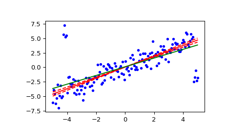

scipy.stats.theilslopes¶
-
scipy.stats.theilslopes(y, x=None, alpha=0.95)[source]¶ Computes the Theil-Sen estimator for a set of points (x, y).
theilslopesimplements a method for robust linear regression. It computes the slope as the median of all slopes between paired values.Parameters: y : array_like
Dependent variable.
x : array_like or None, optional
Independent variable. If None, use
arange(len(y))instead.alpha : float, optional
Confidence degree between 0 and 1. Default is 95% confidence. Note that
alphais symmetric around 0.5, i.e. both 0.1 and 0.9 are interpreted as “find the 90% confidence interval”.Returns: medslope : float
Theil slope.
medintercept : float
Intercept of the Theil line, as
median(y) - medslope*median(x).lo_slope : float
Lower bound of the confidence interval on medslope.
up_slope : float
Upper bound of the confidence interval on medslope.
Notes
The implementation of
theilslopesfollows [R667]. The intercept is not defined in [R667], and here it is defined asmedian(y) - medslope*median(x), which is given in [R669]. Other definitions of the intercept exist in the literature. A confidence interval for the intercept is not given as this question is not addressed in [R667].References
[R667] (1, 2, 3, 4) P.K. Sen, “Estimates of the regression coefficient based on Kendall’s tau”, J. Am. Stat. Assoc., Vol. 63, pp. 1379-1389, 1968. [R668] H. Theil, “A rank-invariant method of linear and polynomial regression analysis I, II and III”, Nederl. Akad. Wetensch., Proc. 53:, pp. 386-392, pp. 521-525, pp. 1397-1412, 1950. [R669] (1, 2) W.L. Conover, “Practical nonparametric statistics”, 2nd ed., John Wiley and Sons, New York, pp. 493. Examples
>>> from scipy import stats >>> import matplotlib.pyplot as plt
>>> x = np.linspace(-5, 5, num=150) >>> y = x + np.random.normal(size=x.size) >>> y[11:15] += 10 # add outliers >>> y[-5:] -= 7
Compute the slope, intercept and 90% confidence interval. For comparison, also compute the least-squares fit with
linregress:>>> res = stats.theilslopes(y, x, 0.90) >>> lsq_res = stats.linregress(x, y)
Plot the results. The Theil-Sen regression line is shown in red, with the dashed red lines illustrating the confidence interval of the slope (note that the dashed red lines are not the confidence interval of the regression as the confidence interval of the intercept is not included). The green line shows the least-squares fit for comparison.
>>> fig = plt.figure() >>> ax = fig.add_subplot(111) >>> ax.plot(x, y, 'b.') >>> ax.plot(x, res[1] + res[0] * x, 'r-') >>> ax.plot(x, res[1] + res[2] * x, 'r--') >>> ax.plot(x, res[1] + res[3] * x, 'r--') >>> ax.plot(x, lsq_res[1] + lsq_res[0] * x, 'g-') >>> plt.show()
